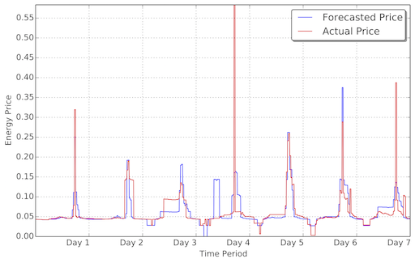

This work is licensed under a Creative Commons Attribution 4.0 International License.
This work is licensed under a Creative Commons Attribution 4.0 International License. Proposed by Helmut Simonis, Barry O’Sullivan, Deepak Mehta, Barry Hurley, Milan De Cauwer
You are running a cloud computing service, where customers contract to run computing services (tasks). Each task has a duration, an earliest start and latest end, and resource requirements expressed as integer values for CPU, Memory and I/O attributes. The tasks can be scheduled on one of multiple servers, each server has a limited capacity for the CPU, memory and I/O attributes. Multiple tasks can run concurrently on the same machine if the total resource consumption for all attributes is below the respective capacity. All tasks must be scheduled within their release and due dates, these dates are set so that no task stretches over midnight between two days. Tasks can not be interrupted, once started, they must run for their given duration.
If a machine is used by a task, it must be running at that time. In addition to the cost of running the allocated tasks, the machine consumes some idle power if it is on. Every time a machine is switched on or off, a start-up resp. shut-down cost must be paid. All machines are off at the beginning of the planning period, all machines must be off at the end of the planning period.
The price of electricity for the data centre is a real-time price, and varies throughout the day. The actual price is not known in advance, a forecast must be used to generate a schedule. The total cost of the schedule is determined after the fact by applying the actual price of electricity to the energy consumption in each time period. An example of the discrepancy between the forecast and actual price is shown in the Figure below. The objective is to generate a schedule with the lowest total cost.

This was the subject of the ICON Challenge 2014, a full formal description is available.
This work is licensed under a Creative Commons Attribution 4.0 International License.